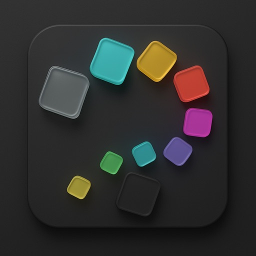
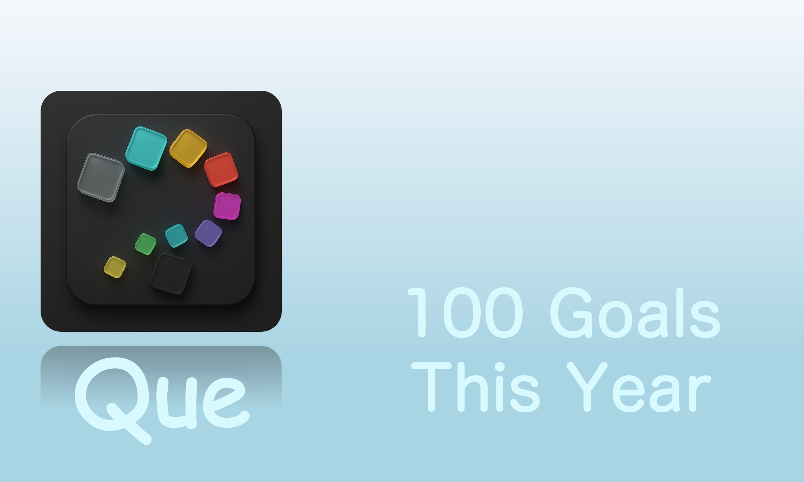
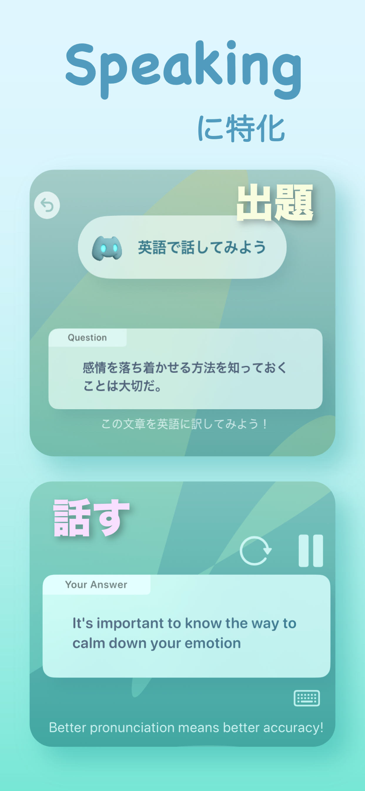
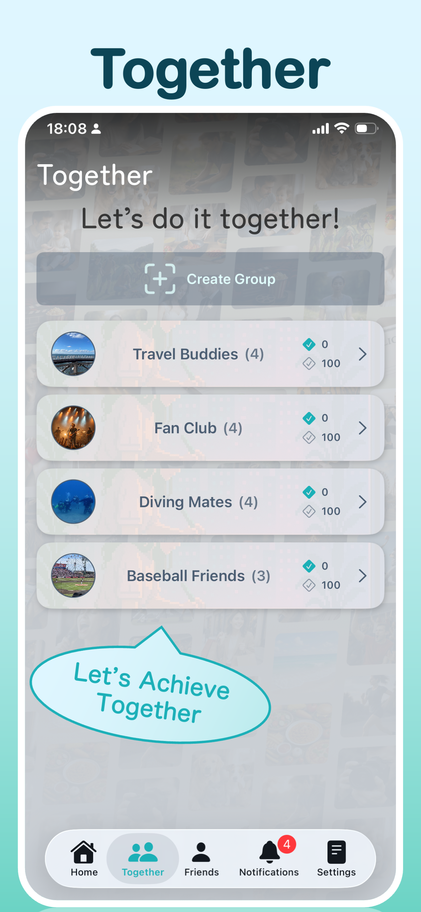
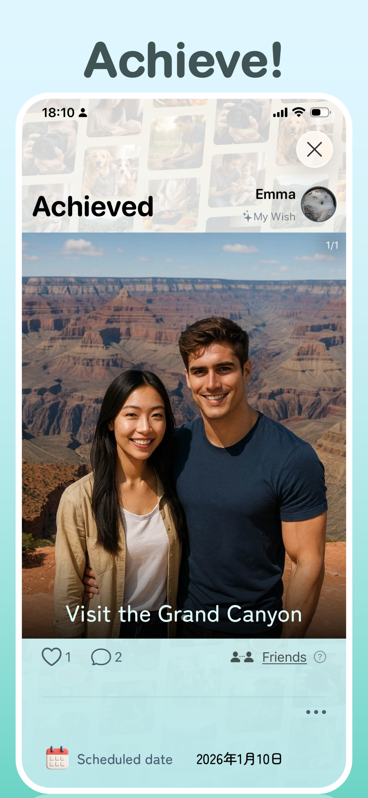

Up to 100 wishes, at your pace
Organize wishes by year without filling all 100 spaces at once. See what you have achieved, what is still ahead and your achievement count.

100 THINGS TO DO THIS YEAR
Your wishes.
This year’s memories.
Places to visit, challenges to try, time with people you love. Que is a bucket list app for 100 things to do this year. Make it your own, share with friends, or build a list as a couple. Save each achievement with photos and a short note.

WHAT IS QUE?
Que is an iPhone bucket list app for up to 100 wishes each year, from planning and sharing goals to recording achievements as memories.
Manage personal goals, encourage friends, or work on a shared list as a couple or group. Choose “Only Me” or “Friends” for each personal wish. If you are still looking for ideas, explore examples or talk them through with AI.
FEATURES
Organize wishes by year without filling all 100 spaces at once. See what you have achieved, what is still ahead and your achievement count.
Choose when to get started, prioritize what matters and note what to prepare. Use search and sorting to find a wish and take the next step.
Set each personal wish to “Only Me” or “Friends.” Share personal goals or create a common group list with a partner or friends. Encourage each other with comments and likes.
Add up to 4 photos and a short note to each achievement. Capture a trip, a finished challenge or how the moment felt, and look back on your year.
Talk with AI or browse example wishes, then add suggestions that interest you. AI features have a usage allowance; additional usage is available through in-app purchases.
Copy selected wishes from this year to next year, including unfinished goals and challenges you want to repeat. You can also share your list as an image.
WHO IS QUE FOR?
From New Year’s resolutions to your next day out, make room for what you want to do and the people you want to do it with.
For yourself
Keep reading, study, exercise and other yearly goals in one list. Add planned dates and priorities, then make progress at your own pace.
Try: read a book or cook a new dish
For couples
Use a group list for places to visit and experiences to try together. Add photos and a short note to achievements, then look back on shared memories.
Try: visit hot springs or explore a museum
For friends and groups
Share your own wishes with friends or create a common list. Encourage each other with comments and likes as you plan outings and new experiences.
Try: go camping or take on a new challenge
For the undecided
You do not need a finished set of goals. Explore examples or tell AI what you have in mind, then add the ideas that interest you over time.
Try: visit a new café or explore a hobby
GET STARTED
Start with one small idea. If nothing comes to mind, explore examples or AI suggestions.
Add a date, priority and notes. Choose the visibility of personal wishes, or use a group list for shared goals.
Save photos and a short note when you achieve a goal. Look back at the end of the year or copy goals into next year.
WISH LIST IDEAS
Little joys belong alongside big challenges. Use these examples as a starting point for your own list.
APP PREVIEW



FAQ
Que is an iPhone bucket list app for up to 100 wishes each year, from sharing goals to recording achievements as memories. Use it for personal goals or a shared list with a partner or friends.
Que is for people organizing yearly goals, couples planning dates and trips, friends trying new experiences, and anyone who wants to remember achievements with photos. If you have not chosen your goals yet, you can start with examples or AI suggestions.
Yes. You can manage your own wishes without sharing with friends or using groups. Set personal items to “Only Me” to keep them private.
No. Start with one wish and add more over time, up to 100 per year. Small ideas such as visiting a café or reading a book belong on your list too.
No. Choose “Only Me” or “Friends” for each personal wish. You can keep some goals private and share the challenges you would like encouragement with.
Sharing with friends lets them see your personal wishes and achievements. A group list lets a couple or group manage wishes together. You can keep both individual goals and shared plans in Que.
Create a group list for places to visit, date ideas and trips you want to take together. Add photos and a short note to achievements to look back on your shared memories.
Yes. Add a planned date, priority and notes to a wish. Organize when to get started and what to prepare, then find items with search and sorting.
You can add up to 4 photos and a short note to each achievement. Remember what you did along with the places you saw and how it felt.
Yes. You can leave comments and likes on shared wishes to encourage progress and celebrate achievements.
Tell AI what you have in mind to explore ideas, then add suggestions you like to your list. You can also browse example wishes or enter your own ideas.
Que is free to download with in-app purchases. AI features have a usage allowance, and additional usage is available through in-app purchases. Check the in-app purchase screen for the available purchases and their prices.
Yes. Select wishes from this year’s list and copy them to next year. Carry forward unfinished goals or challenges you would like to try again.
Yes. You can share your wish list as an image, in addition to sharing wishes with friends or using a group list.
Que is an iPhone app. Check the compatibility section of its App Store listing for the latest operating system requirements.
For iPhone. Free to download with in-app purchases.